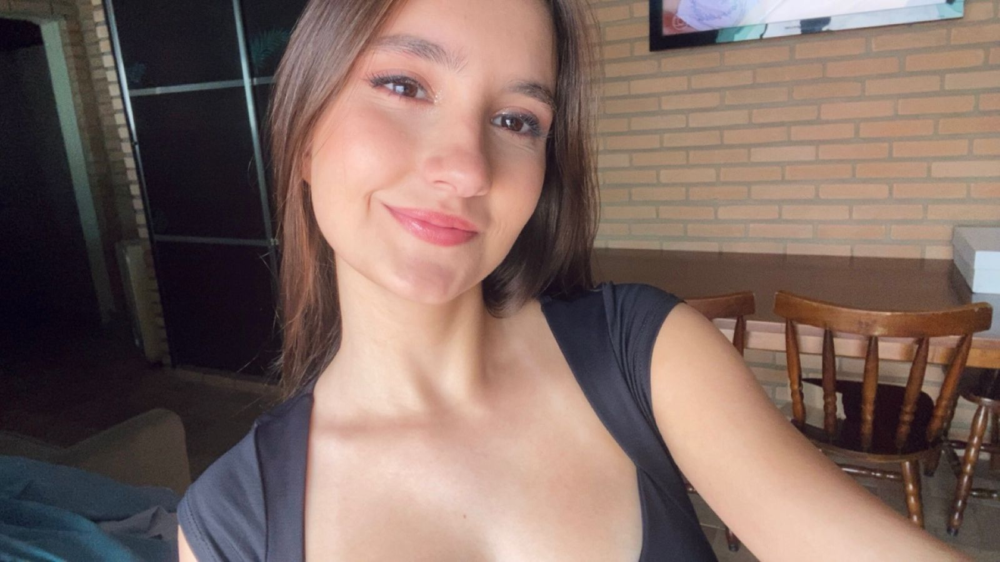

Por trás da balança
Este site foi desenvolvido como projeto de TCC com o objetivo de informar e conscientizar sobre transtornos alimentares em crianças e adolescentes.
A proposta é apresentar, de forma clara e acessível, os principais tipos de transtornos alimentares, seus sinais e sintomas, possíveis causas, impactos na saúde física e emocional, além de orientar sobre como e onde buscar ajuda.
Os distúrbios alimentares podem incluir ingestão inadequada ou excessiva de alimentos
o que pode, em última instância, prejudicar o bem-estar de um indivíduo.
Classificados como uma doença médica, o tratamento adequado pode ser altamente eficaz para muitos dos tipos específicos de distúrbios alimentares.
Quem somos?
Somos estudantes do CEMEP e desenvolvemos este projeto como parte do TCC com o objetivo de conscientizar sobre saúde mental.
Desenvolvido por:
Ana Clara Amaral de Oliveira

Heloísa Maria Carvalho
O que são?
Anorexia Nervosa
Restrição extrema de comida por medo de ganhar peso, mesmo estando muito abaixo do peso ideal.
Bulimia Nervosa
Episódios de compulsão alimentar seguidos de vômitos, laxantes ou exercícios excessivos.
Compulsão Alimentar
Consumo excessivo de comida sem controle, seguido de culpa e vergonha.
Sinais de alerta
Comportamento
- Evita refeições em grupo
- Come escondido ou muito rápido
- Desaparece após comer
- Exercícios compulsivos
Físico
- Perda rápida de peso
- Cansaço constante
- Problemas dentários
- Cabelos fracos
Emocional
- Baixa autoestima
- Ansiedade com comida
- Isolamento social
- Irritabilidade
Estatísticas
Como prevenir
Promova refeições familiares sem julgamentos sobre peso ou comida.
Fale sobre saúde, não aparência. Valorize força e energia.
Observe mudanças e converse com empatia, sem acusações.
Ajuda imediata
24 horas - Apoio emocional
Direitos Humanos
Saúde Mental SUS
Fale com pais, professores ou psicólogos. O primeiro passo salva vidas.